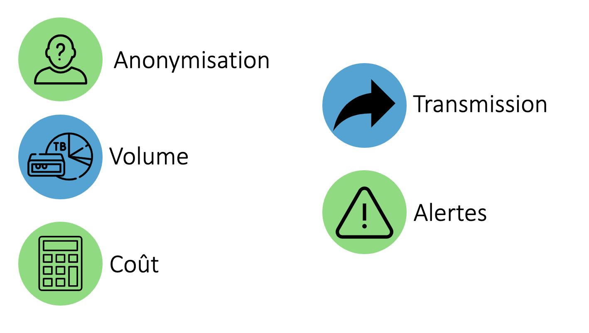

Soutenance
Manager de solutions digitales et data
Le 23/09/2020
Sommaire
Sephira


Stratégie de l'entreprise
Activités
Projet externalisation

Projet externalisation
Projet externalisation
Finalités


Utilisateurs


Méthodes
Gantt
Problématique
Comment mettre en place un système
centralisé
de
gestion et d’analyse
d’événements journaux ?
Pourquoi centraliser ?
Gestion et analyse
Phase de recherche

Points d'attention
Mise en place
Mise en place
Conclusion
Réponse problématique